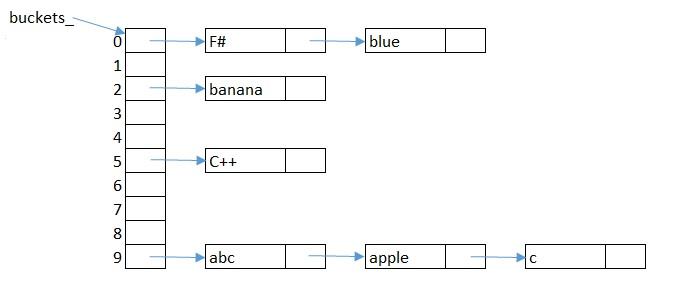

Released Oct 25, 2021; Deadline Monday Nov 15, 2021 5:00 pm
This assignment is worth 30% of the module mark.
This assignment assesses your knowledge in pointers, dynamic memory management, and classes (including deep copy). You will need to know the materials from weeks 11 - 15.
Clarifications and amendments may be announced on the Blackboard discussion forum for this assignment. You are expected to read the forum.
From an object-oriented point of view, I should not prescribe how you should implement the internal workings of the data structure as long as your implementation complies with the specified external interface; nevertheless, this is an assignment, so I am going to prescribe it.
The primary part of the data structure is an array of pointers. Each entry in the array, known as a bucket, is a pointer to the head of a linked list. Each string to be stored will be allocated (in a way to be described later) to a bucket. If multiple strings are allocated to the same bucket, each of them are stored in a different node in the linked list of that bucket.
To faciliate the storage of strings into these linked lists, a
Node class is defined as follows:
class Node {
string s_; // string stored at this node
Node* next_; // pointer to next Node in the list
...
};
The data structure is encapsulated in the BucketList class,
defined as follows:
class BucketList {
Node** buckets_; // pointer to an array of Node*
...
};
The access point of this data structure is the buckets_
variable, which is an array of Node*. (As you will see below,
this array will be dynamically resized, so instead of declaring it as
Node*[], it is declared as Node**.)
The size of this array is called the capacity of the
BucketList (which is not the same thing as the number of strings stored).
The BucketList class is made a "friend" of the Node class. We will explain
what this means later, but all you need to know now is that BucketList
can access Node as if everything there is public.
Here is a picture showing (conceptually) how seven strings C++, F#, abc, apple, banana, blue, c might be stored in a BucketList with capacity 10:

Note that the strings themselves are never stored in the
buckets_ array itself.
Even if only one string is in a bucket, that bucket does not contain the
string, but rather a pointer to a Node that stores the string.
The way a string is allocated to a bucket is given by a mash function (also a made-up name). This function takes any string and returns an integer. There are many ways that such a function can be defined, but for this assignment, we will use the following. Consider a string s = s1 s2 s3 ... sn with n characters. Let ci be the ASCII value corresponding to the character si (For example, A = 65, z = 122). Then the integer returned is given by the formula c1 + 2*c2 + 4*c3 + ... + 2n-2*cn-1 + 2n-1*cn. To work out which bucket the string should go to, this integer is further "restrained" to be between 0 and cap - 1, where cap is the current capacity (number of buckets). This is done by taking its remainder when divided by cap (i.e. the C++ % operator).
For example, for the string "Hello", the mash value is
72 + 2*101 + 4*108 + 8*108 + 16*111 = 3346, and if there are currently
10 buckets, it should go to buckets_[6] since
3346 % 10 = 6.
We define an empty string to have a mash value of 0.
Node and BucketList
classes so that BucketList supports the following functions:
bool contains(const string& s): return true if the string s is in the
data structure, false otherwise.
This is (almost) done for you as an example; however, you will need to
modify the part with INITIAL_CAP, otherwise it
would not work correctly once the data structure is resized (more on
this later).
void insert(const string& s): add the string s to the data structure.
Before insertion, it should check whether resizing should happen first;
this is described separately below. Then, the string
should be added to the linked list of the bucket given by the mash value
of the string. If the bucket is currently empty (has no other string), it
should be added as the only node in a new linked list.
If there are other strings already in the same bucket, it should be inserted
into the linked list in increasing alphabetical order (i.e. the order
used by C++ string comparisons) of the strings.
If the string is already in the BucketList, do not make any changes.
void remove(const string& s): remove the string s from the data
structure. You should remove the Node object containing that string from
the relevant linked list. The memory must be properly released.
If s is not in the BucketList, do not make any changes.
string tostring(): returns a string that would give a "visual"
representation of the contents of the BucketList. More precisely, there
should be one row per bucket. Each row begins with a number which is the
index to the buckets_ array (i.e. the mash value of the
strings in that bucket),
followed by each string in the linked list of that bucket, in
alphabetical order.
Every string (and the leading number) are separated by one space character.
For example, the BucketList above will
be printed like this:
0 F# blue 1 2 banana 3 4 5 C++ 6 7 8 9 abc apple cThe whole printout is stored in one string (which will contain multiple lines, separated by the '\n' character) and returned to the caller; the function itself does not print anything to the screen. Please take care not to include any extra invisible whitespaces (which will make you fail the test cases).
int h(const string& s): this is the mash function. It should return
the value before the % operator is applied to it.
You can assume the string is "not too long" so the calculation will not
result in numbers too large to fit inside a C++ int.
int getSize(): return the number of strings currently stored
in the data structure.
int getCap(): return the current capacity of the data structure,
i.e. the number of buckets in the array.
In all the above functions, you can assume the input string s only contains "normal", printable ASCII characters.
The performance of a BucketList depends on whether many strings are in the same bucket (i.e. whether some linked lists are very long). Ideally, each bucket should not have more than one string, so none of insertion, removal or search require traversing any linked list: all it needs to do is to calculate the mash value of the string and jump to that bucket. However, as more and more strings are inserted, there will be "collisions" (where multiple strings go to the same bucket), and if some buckets have many nodes (i.e. the linked list in that bucket is very long), all the operations will become inefficient.
The load factor is the ratio between the number of strings currently stored and the capacity (number of buckets). The data structure should only allow a maximum load factor, defined in the MAX_LOAD_FACTOR constant. If an insertion would result in the maximum load factor being exceeded, the BucketList should double its capacity first, before performing the insertion. By doubling, we mean you should create a new array with twice the capacity, and insert each existing string into the correct bucket in the new array. Note that the mash values will change and strings that are in the same bucket (same linked list) before resizing may be distributed to different buckets afterwards. The old array need to be cleaned up properly (memory released).
For illustration, suppose we use the default INITIAL_CAP and MAX_LOAD_FACTOR
values in the code, and then seven strings are inserted and stored as
depicted above. Then when another string "red" is inserted, the
BucketList should look like this, as produced by the
toString() function:
0 F# 1 2 3 4 5 C++ 6 7 8 9 abc apple 10 blue 11 12 banana 13 14 15 16 red 17 18 19 c
Note that resizing only happens before insertion. If the data structure becomes "too empty" due to many removals, "shrinking" will not take place.
You must not change the existing public interface of the classes, and you must not change the existing private data members of the classes. You are allowed to add public or private member functions, or private data members, should you want to.
You must not use containers from the Standard Template Library (STL), nor smart pointers. (Both of these will be covered later in the module.)
See this separate page for the marking criteria.
To use the test suite (which is used in the execution testing part of the marking), simply type "make" in a linux terminal (with all the above files in the same folder). It will (assuming you did not break BucketList.h or BucketList.cpp) produce a BucketListTesterMain executable file. Run the program by typing
./BucketListTesterMain aor
./BucketListTesterMain a b c dwhich runs a single test case or multiple test cases respectively. We will also demonstrate its use in class.
The given BucketList.h and BucketList.cpp files (without your contributions) are already compilable with the test suite. It might even pass a few test cases. So, whatever you do, please don't break them...
The test suite may not cover all corner cases, so passing all test
cases does not guarantee your program is 100% correct.
Also, unfortunately we cannot isolate the testing of the various functions.
For example to pass those test cases meant for toString() you
need to also implement insert() at least partially correctly.
Submit your completed work on Blackboard ("Assessment and Feedback" on the left, then "Assignment 1").
Submit only the files BucketList.h and BucketList.cpp. Just upload them as two separate files with those exact names. DO NOT change their names including upper/lowercase, DO NOT change the extension to .txt or .cpp.txt or some such, DO NOT put them in a Word or pdf file (yes, someone actually did that), DO NOT put them in a zip archive, and DO NOT upload the entire project folder of whatever IDE you are using. Any such problems will incur a penalty.
While you may want to change the main.cpp file for your own testing, it is not part of the submission. The test suites and the makefiles also should not be submitted. If you submit them, they will be ignored and I will use my own version for testing.
This is an individual assignment, and collaboration is not permitted. Plagiarism will be treated strictly according to standard university and departmental procedures. Your submissions will be sent to a plagiarism detection service (MOSS).
In line with university policy, marking will be done anonymously. Only the Blackboard-supplied userid / student number will be visible in marking.
For the above two reasons, do not include your name, userid, student number, or any other personally identifiable information in your programs.